征文摘要管理产品需求文档
| 文件编号 | 作者 | 文档版本 | 最后修改日期 |
|---|---|---|---|
| AM-PRD | 周勤 | V1.0.0 | 2017/6/3 |
| AM-PRD | 周勤 | V1.0.1 | 2017/6/27 |
| AM-PRD | 周勤 | V1.0.2 | 2017/7/3 |
| AM-PRD | 周勤 | V1.0.3 | 2017/7/10 |
| AM-PRD | 周勤 | V1.0.4 | 2017/8/15 |
| AM-PRD | 周勤 | V1.0.5 | 2017/8/16 |
| AM-PRD | 周勤 | V1.0.6 | 2017/8/22 |
| AM-PRD | 周勤 | V1.0.7 | 2017/8/23 |
| AM-PRD | 周勤 | V1.0.8 | 2017/8/28 |
当前版本号：V1.0.8
修订控制
| 编号 | 文档版本 | 修订章节 | 修订原因 | 修订内容 | 修订人 |
|---|---|---|---|---|---|
| 1 | V1.0.0 | 创建 | 2017/6/3 | 周勤 | |
| 2 | V1.0.1 | 2.2.1.1 2.2.3.3 |
修改 | 1. 添加开启学术会议功能； 2. 添加修改帐号信息功能; |
周勤 |
| 3 | V1.0.2 | 2.2.6 | 新增 | 1. 新增征文通知设置相关说明 | 周勤 |
| 4 | V1.0.3 | 2.2.1.4 | 修改 | 1. 摘要提交形式设置 | 周勤 |
| 5 | V1.0.4 | 2.2.4.1 | 新增 | 1. 新增后台摘要下载功能 | 周勤 |
| 6 | V1.0.5 | 2.2.4.1 | 新增 | 1. 由于下载任务可能持续较查时间，新增摘要下载窗口，提示用户当前下载任务的状态 | 周勤 |
| 7 | V1.0.6 | 2.2.4.5 | 新增 | 1. 新增后台导出征文数据功能 | 周勤 |
| 8 | V1.0.7 | 2.2.1.11 2.2.4.1 |
新增/修订 | 1. 新增需要报名后方可提交征文功能 2. 修订了下载文件时的处理方式 |
周勤 |
| 9 | V1.0.8 | 2.2.3.7 2.2.4.1 2.2.1.11 |
新增/修订 | 1. 第一作者、通讯作者和共同作者都需要可以设置为演讲作者 2. 提交征文时，共同作者可以不必填 3. 新增提交征文全文功能 |
周勤 |
目录
- 征文摘要管理产品需求文档
1. 概述
1.1 名词说明
| 名称 | 说明 |
|---|---|
| 摘要(Abstract) | 摘要通常在正式报告前几个月就要写好，摘要可以帮助作者取舍报告的内容。主办方（评审委员）通过摘要评审来决定是否需要选择该作者作为会议的演讲者、或者在摘要集中为作者的工作进行宣传和吸引人们来参加作者的讨论或观看电子壁报。因此，一般来说，摘要应该有坚实且令人兴奋的结果，但还要给人说明作者从事的研究工作是动态的、仍在进行的，读过摘要的人只有通过听取报告才能够明白你研究的内容。在学术会议中，摘要的第一位读者就是会议论文的评审委员会 |
| 通讯作者(Corresponding Author) | 通讯作者往往是课题的总负责人，承担课题的经费，设计，文章的书写和把关。也是文章/摘要和研究材料的联系人。最重要的是，他担负着文章可靠性的责任。需要负责与主办方（评审委员会）的一切通信联系和接受读者的咨询等。实际上如果从知识产权上来说，研究成果算是通讯作者的。通讯作者的好处是能和外界建立更广泛的联系。通讯作者通常由论文所属领域内最有权威者担当。 |
| 第一作者(First Author) | 必须是第一线操作的实施者和原始数据的收集和处理人，又是初稿的执笔人，第一作者要对研究结果和数据真实性负首要责任，第一作者的署名通常排在最前面。 |
| 联合作者(Co-Author) | 对作品有一定直接或间接帮助的贡献人，在总体贡献上跟第一作者有较大差距，统称为联合作者 |
| 主办方(Organizer) | 学术会议的发起人 |
| 大会主席(Conference chair) | 以公正的立场围绕会议主题，主持并引导协调会议的人 |
| 评审委员会(Selection Committee) | 由评审专家组成的摘要评审组织 |
| 评审专家(Reviewer) | 对摘要进行评审的某领域的专家 |
| 评审任务(Review quest) | 由评审委员会或主办方将摘要分配给评审专家而产生的任务 |
1.2 产品概述及目的
1.2.1 产品概述
征文摘要管理系统主要目的是为了给学术会议接受和准备演讲摘要使用，通常在会议开始前几个月，会议主办方或评审委员会需要收集学者在最近一段时间内的工作成果摘要或说明。摘要基本上说明了某种假设，研究使用的工具，收集的数据以及对这些数据的基本理解。
大会主席或评审委员会可以选择接受或拒绝这些摘要，被接受的摘要将会被安排到会议日程中，作为口头演讲或者电子壁报。摘要通常也会在会议之前或之后，被整理成会议记录、学术日志、摘要集或在线发布（目前尚未处理）。
1.2.2 产品目的
征文摘要管理系统包含了摘要提交设置、摘要提交、摘要管理以及摘要评审等四大部分，操作人涉及到后台管理员、作者以及评审专家等多种不同的身份。
征文摘要管理系统使得这些学术会议中的三种不同身份的角色能够使用系统进行无缝合作，使学术会议主办方在收集、管理、评审摘要时更加高效快捷。
第一期产品的目的包括：收集摘要、分配评审任务、获取最终评审结果。
第一期产品不包含的内容有：将摘要制作成摘要集、会议记录或学术日志。
1.3 产品风险
风险级别说明：非常高的，高的，适度的，低的，非常低的
| 风险 | 风险级别 | 描述 | 监控策略 | 改善策略 |
|---|---|---|---|---|
| 与原有报名流程有一定的区别 | 适度的 | 学术会议的注册报名流程与原有会议的报名流程有所不同，一般来说需要参会人先注册后报名，参会人提交某一部分信息后有可能经过很长一段时间后才会报名付款或提交征文，所以需要改造目前的报名流程，可能会存在一定的流程无法完全适配的情形 | 需要通过服务一两场学术会议来了解具体的流程 | 跟踪获得数据后，需要根据实际情况不断的调整，使之更适合学术会议 |
| 对于学术会议不够了解，可能导致系统不完全满足某些学术会议的需求 | 高的 | 由于产品及开发都对学术会议不够了解，对于某些细节，只能通过从竞品或网上的资料获得的信息进行主观判断，可能会导致某些需求理解上有偏差，无法完全满足需求 | 需要通过服务一两场学术会议来了解具体的流程 | 需要获得真实会议反馈后，重新理解需求 |
2. 功能需求
2.1 功能总览
征文摘要管理系统基本模块 - 功能总表
优先级说明：
- P1: 优先级最高，必须完成
- P2: 中等优先级，碰到无法解决的问题时可以延后
- P3: 优先级低，在工期紧张时可以延后
| 名称 | 描述 | 优先级 | 备注 |
|---|---|---|---|
| 1. 摘要提交设置 | 启用学术会议 | P1 | |
| 启用摘要提交 | P1 | ||
| 摘要提交时间范围 | P1 | ||
| 摘要提交形式：文本或文件 | P1 | ||
| 填写作者 | P2 | ||
| 填写关键字 | P2 | ||
| 征文提交须知(中英文) | P1 | ||
| 学科分类（中英文） | P1 | ||
| 期望发表类型（中英文） | P1 | ||
| 征文序号功能 | P1 | ||
| 2. 征文评审设置 | 处理方式设置（中英文） | P1 | |
| 评审意见设置 | P2 | ||
| 是否需要最终评审 | P1 | ||
| 任务接受时间和任务完成时间设置 | P1 | ||
| 3. 摘要提交 | 添加“重要日期”模块 | P2 | |
| 注册登录功能（联系人） | 已完成 | ||
| 修改个人信息（联系人） | P2 | ||
| 个人中心嵌入报名表单，包含门票字段 | P1 | ||
| 个人中心查看订单并付款 | P1 | ||
| 发票功能 | 已完成 | ||
| 4. 摘要后台管理 | 征文列表 | P1 | |
| 分配评审 | P1 | ||
| 查看评审任务 | P2 | ||
| 评审专家列表 | P1 | ||
| 添加或导入评审专家 | P1 | ||
| 5. 评审摘要 | 评审专家登录 | P1 | |
| 待接受任务列表 | P1 | ||
| 待评审任务列表 | P1 | ||
| 已评审任务列表 | P1 |
征文设置模型
 

2.2 功能详情
2.2.1 摘要提交设置
2.2.1.1 启用学术会议
- 简要说明
征文摘要管理需要在启用学术会议后方能使用，启用学术会议后，将使用学术会议专有的报名流程。见图0：
业务规则
- 启用学术会议后，显示下方的提交设置和摘要评审设置
- 启用学术会议后，则只能使用学术会议专有的报名流程
- 学术会议报名流程：见图1
- "启用学术会议"功能属于专业版功能，需要开通专业版后方能使用
- 点击开启学术会议时，如果当前会议不是专业版，则跳转到版本升级页面，提示用户升级：见图2
图0：开启学术会议
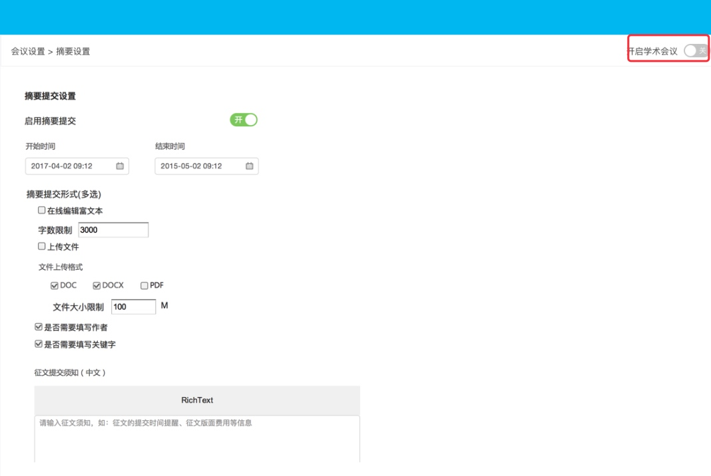
图1：学术会议报名流程
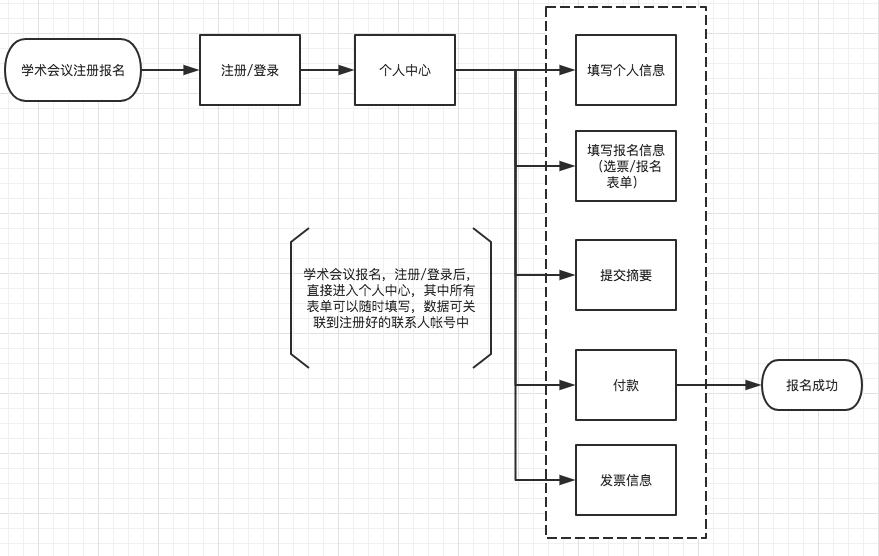
图2：提示升级
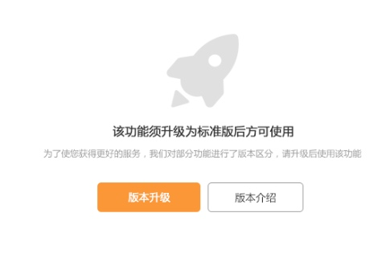
2.2.1.2 启用摘要提交
- 简要说明
启用摘要提交后，参会人/作者登录个人中心后，才能够看到提交摘要菜单
业务规则
- 如果未启用摘要提交，则参会人/作者在个人中心中无法看到提交摘要的菜单
- 如果已启用摘要提交，则参会人/作者在个人中心中可以看到提交摘要的菜单
- "启用摘要提交"功能属于专业版功能，需要开通专业版后方能使用
- 如果当前会议不是专业版，则无法开启“启用学术会议”，也就无法看到“启用摘要提交”设置项，但是在“启用摘要提交”的地方需要再做一次判断，确保逻辑正确
2.2.1.3 摘要提交时间范围
- 简要说明
设置摘要提交的开始和结束时间，在当前时间超出该时间段（之前或之后）时，无法创建或修改摘要提交，需修改状态下的摘要重新提交不受该时间段限制。
业务规则
- 征文提交开始时间：任何时间皆可；结束时间：晚于开始时间；开始和结束时间为必填项，不能为空
- 当前时间在摘要提交时间范围之前，提示“摘要提交尚未开始，摘要提交时间：2017-04-02 09:12 至 2015-05-02 09:12”，见图3
- 当前时间在摘要提交时间范围之后，提示“摘要提交已截止，无法继续提交”，见图4
- 已提交过摘要的作者，如果当前时间在提交时间范围之后，在摘要显示列表中，禁用重新提交按钮，鼠标经过时提示“摘要提交已截止，无法重新提交”，见图5
- 当摘要已被评审专家或最终评审标记为“需修改”状态时，不在该时间范围内也能够重新提交
- 默认值为空
图3：摘要提交尚未开始
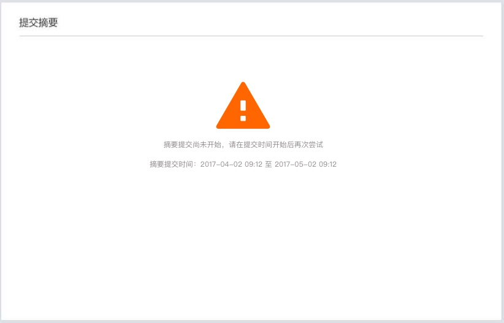
图4：摘要提交已截止
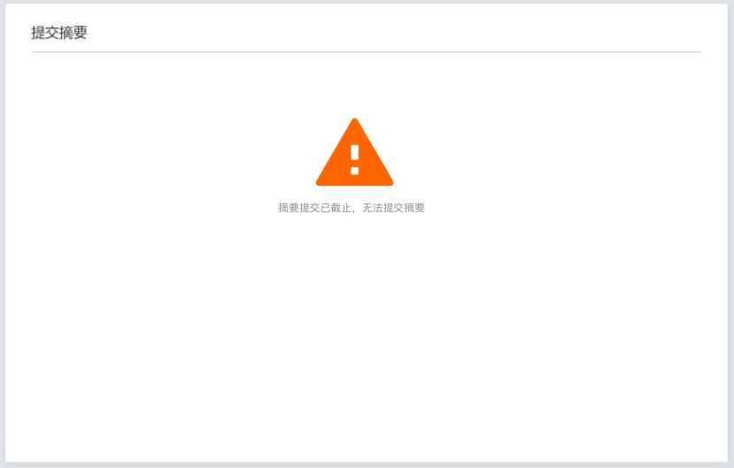
图5：已提交摘要后，过截止时间
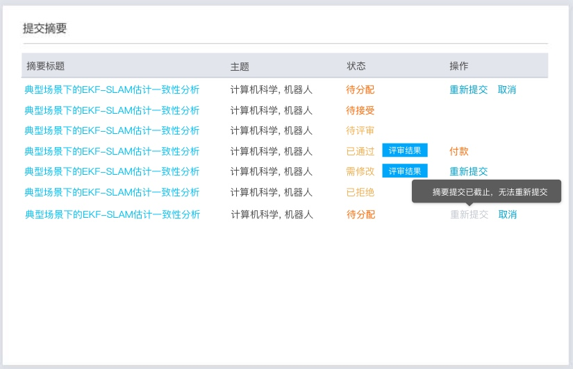
2.2.1.4 摘要提交形式
- 简要说明
摘要提交形式主要控制前台用户提交摘要的方式，可支持“在线编辑
富文本”以及“上传文件”两种方式，两种方式在后台可同时勾选，当同时勾选时，则提交摘要时可以选择使用任一提交方式
业务规则
- 默认勾选“上传文件”，不勾选“在线编辑富文本”
- 使用“在线编辑富文本”时，可设置字数限制（默认为3000），英文/中文均算一个字数，超出数量限制时，需要给出超限制提示：见图6
- 使用“上传文件”时，可设置能够支持的上传格式，目前可支持doc/docx三种格式的文件，并可设置文件大小限制，如文件格式不正确，提示：“上传格式错误，仅上传doc/docx/pdf格式的文件”，其中“doc/docx”这三种格式需要根据后台配置变化；如文件大小超出限制，提示：“文件大小超出限制，仅支持上传不超过100M的文件”，其中“100M”根据后台配置变化，见图6
- 勾选状态下，显示后面的设置项，不勾选则不显示 见图6：摘要提交形式设置
图6：在线编辑富文本错误提示和字数提示
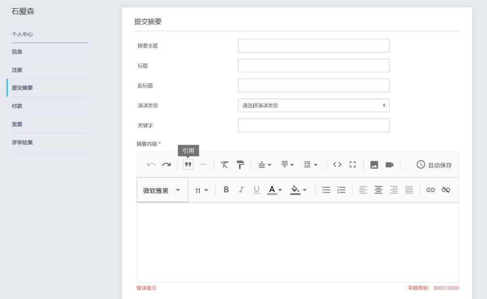
图6：摘要提交形式设置
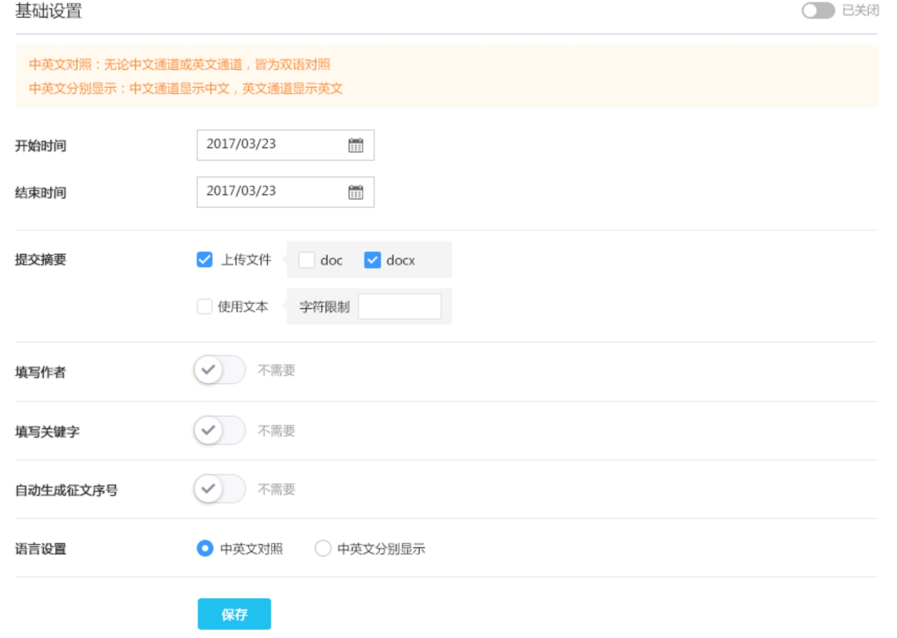
2.2.1.5 是否需要填写作者
- 简要说明
控制提交时是否需要填写作者表单，如果未勾选，则不需要填写任何作者信息
业务规则
- 默认勾选
- 勾选后需要填写“通讯作者”、“第一作者”、“共同作者”信息，作者字段暂时固定，后期需要可扩展，作者字段见表1
表1：作者字段表
| 通讯作者 | 第一作者 | 共同作者 |
|---|---|---|
| 名/Last name | 名/Last name | 名/Last name |
| 姓/First name | 姓/First name | 姓/First name |
| 性别/Gender | 性别/Gender | |
| 邮箱/Email Address | 邮箱/Email Address | 邮箱/Email Address |
| 手机/Mobile Number | 手机/Mobile Number | |
| 邮寄地址/Mailing address | 邮寄地址/Mailing address | |
| 职位/Position | 职位/Position | |
| 组织或公司/Organization or Company | 组织或公司/Organization or Company | 组织或公司/Organization or Company |
| 邮编/Postal | 邮编/Postal | |
| 传真号码/Fax number | 传真号码/Fax number | |
| 备注/Note | 备注/Note | |
| 办公室号码/Office Number | 办公室号码/Office Number |
2.2.1.6 是否需要填写关键字
- 简要说明
控制提交摘要时是否需要填写摘要关键字
业务规则
- 默认勾选
- 勾选后提交时则需填写摘要“关键字”信息
- 后台管理可使用关键字查询摘要
- 摘要填写时以英文逗号分割
2.2.1.7 征文提交须知
- 简要说明
征文提交须知控制在前台提交时显示提交须知，分为中英文，使用语言参数作为中英文控制
业务规则
- 默认为空，当值为空时，前台不显示征文提交须知，有值时则显示提交须知，见图7
图7：征文提交须知
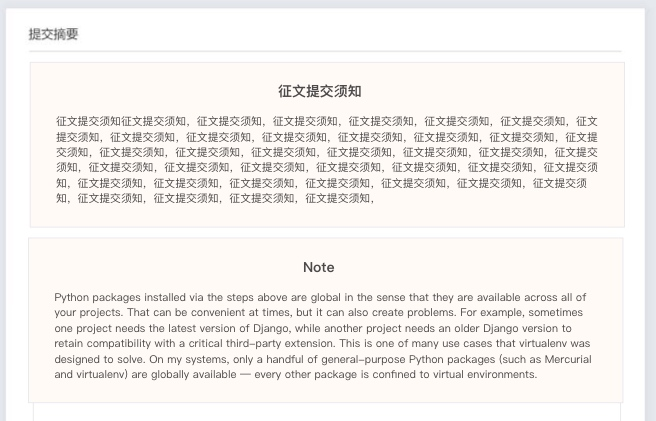
2.2.1.8 学科分类
- 简要说明
设置作者在提交摘要时可选择的学科分类，作者在提交摘要时，必须选择其中的一个分类作为主题。我们会预设一整套学科分类，数据将从教育部数据库中获取。主办方可从预设的数据库中添加分类或自定义。
业务规则
- 左侧穿梭框内为我们提交预设好的学科分类数据，最多为3级结构，分为中英文双语，且每个学科分类带有分类标识，用于生成征文序号
- 左侧框内可以进行学科分类搜索，搜索时会显示包含该关键字的所有层级，如第一级包含“关键字”，则显示该级下所有分类；如第二级包含“关键字”，则显示其上一级分类、包含关键字本身的二级分类以及其下所有三级分类；如第三级包含“关键字”，则显示其本身以及二级和一级分类。
- 左侧框内的数据无法编辑
- 右侧穿梭框内为已选择的学科分类，选择逻辑与搜索相同。即：选择第一级，将该级下所有分类都移到右侧；选择二级分类，将其上一级分类以及其下所有三级分类移到右侧；选择三级分类，则将其本身以及以所属的二级和三级分类移到右侧。
- 右侧搜索逻辑与左侧相同
- 右侧所有数据可以自定义，重命名时可以输入中文名、英文名以及编号，见图8
- 右侧无分类时，需要有新建分类按钮，见图9
- 一级、二级分类下，可以新建同级和下级分类，三级分类下仅能新建同级分类
- 删除一级分类，则会同时删除其下所有分类数据，二级分类也一样
- 选择：可使用shift键进行多选
- 择中某些分类后，可使用右侧箭头上移下级以及升级和降级
- 点击编辑说明跳转到docs站点的说明文章，使用新窗口打开，链接后面再补上
- 所有数据需要点击“保存设置”后方可生效
- 学科分类语言设置：设置中英文对照后，无论中文或英文通道，学科分类都以双语显示，显示方式为三级下拉菜单（级联菜单以实际层级为准）
- 设置中英文分别显示后，中文会议下显示中文，英文会议下显示英文，取决与个人中心或者注册登录的入口的语言参数。
图8：编辑分类
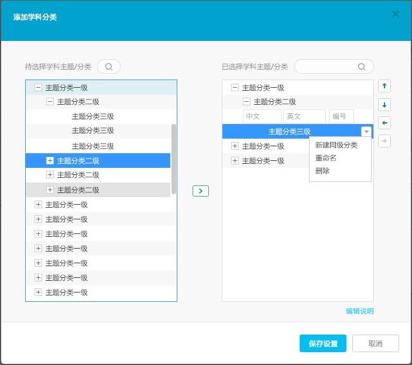
图9：右侧框无分类时
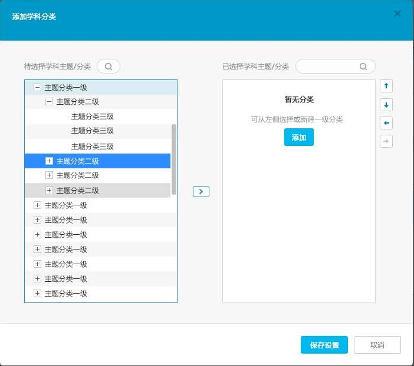
2.2.1.1.9 期望发表类型
- 简要说明
期望发表类型为作者提交该摘要的目的，如口头报告，电子壁报，病例报告等等。添加好的期望发表类型在提交征文时供作者选择。
业务规则
- 默认值有“口头演讲/Oral Presentation”、“壁报交流/Poster Presentation”
- 显示方式：中英文以"/"分割，如：口头演讲/Oral Presentation
- 添加或编辑时需要分类”中文“和”英文“两个输入框，模态窗口标题根据添加或编辑文字需要不一样，添加时显示”添加类型“，编辑时显示”编辑类型“，中文或英文其中之一可以为空（二选一），见图10
- 可删除
图10：添加类型
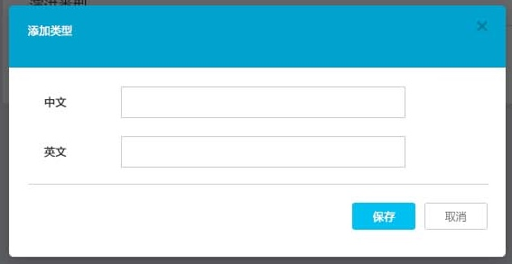
2.2.1.10 自动生成摘要序号
- 简要说明
摘要序号主要用于做为摘要的唯一标识，在编辑摘要集或生成电子壁报时会使用到该序号
业务规则
- 勾选后，任何提交的摘要都会自动按照学科分类和序号生成摘要序号，格式为[一级分类编号][二级分类编号][三级分类编号]-[提交序列号]，如ABC-0001,提交序列号为自增序列,默认为4位，可超过4位，如10001
- 分类如果只存在二级或一级，没有的级别则自动留空，如：AB-0002
- 如果不存在学科分类，则只使用提交序列号做为摘要序号，如：0003
2.2.1.11 报名后方可提交征文 （V1.0.7新增）
- 简要说明
设置报名后方可提交征文后，用户在注册帐号后，需要先报名注册成功交费后，才能够看到提交摘要页面
业务规则
- 在“提交设置” =>“基础设置”中 添加“报名成功后方可提交征文”设置项
- 开启该选项后，作者需要先报名成功交费后，才能够提交征文摘要信息，如果未报名注册成功（付款成功），则给出错误提示
- 如何判断是否报名：判断该联系人（注册帐号）下是否有参会人
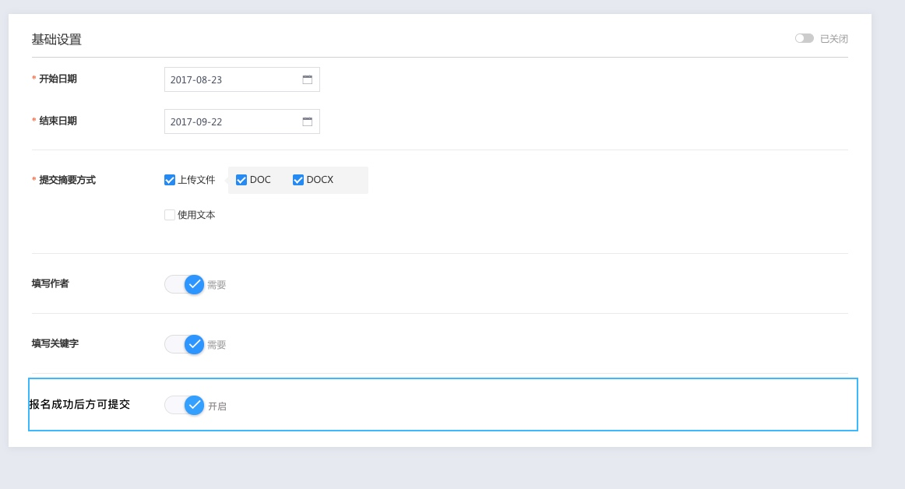
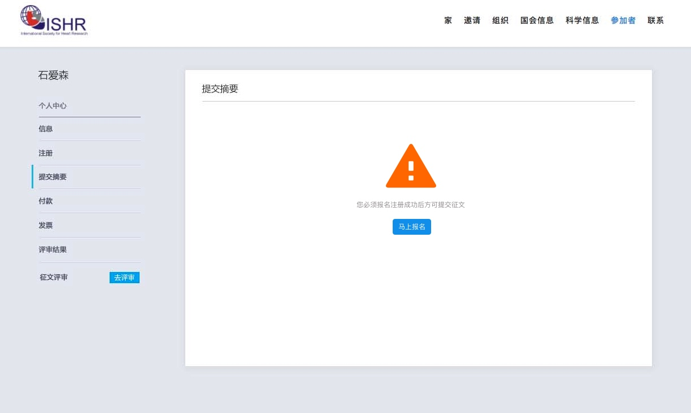
2.2.1.11 提交征文全文附件 （V1.0.8新增）
- 简要说明
开启提交征文全文功能后，作者在前台提交时可以按后台设置的方式提交征文全文
业务规则
- 该选项默认状态为不开启
- 开启该选项后，可设置全文是否必须提交，默认为不必须提交
- 征文全文仅支持使用文件方式进行上传，支持格式为doc|docx|pdf|zip|rar，文件最大不超过50M
2.2.2 摘要评审设置
2.2.2.1 处理方式设置
- 简要说明
处理方式是提供给评审专家选择的文案，分为”通过“、”拒绝“、”修改“三种方案，可以设置表示这三种方案的文案，如表示”通过“的文案可设置为”同意接收“，表示”修改“的文案可设置为”大幅修改“、”小幅修改“等等。
业务规则
- 共有”通过“、”拒绝“、”修改“三种处理方式，每种处理方式可使用不同的处理文案
- 评审专家评审时可以选择不同的处理方案，便于理解
- 显示时使用”同意接收/Accept“格式
- 编辑删除样式，见图11
图11，编辑删除样式

2.2.2.2 评审意见设置
- 简要说明
可设置是否需要评审专家填写评审意见，可设为”必填“、”选填“、”无须填写“，设置后，在评审时根据对应的设置显示或隐藏”评审意见“输入框
业务规则
- 选择”必填“时，显示输入框，且不能为空
- 选择”选填“时，显示输入框，但可以为空
- 选择”无须填写“时，不显示输入框
2.2.2.3 最终评审
- 简要说明
可开启或关闭，控制是否需要经过主办方/评审委员会进行最后的筛选或者是直接使用评审专家的建议的处理方式
业务规则
- 关闭最终评审时，直接使用评审专家的处理建议，即评审专家评审后即为最终评审
- 开启最终评审时，在评审专家评审后，还需要使用后台再进行一次评审处理，处理表单与评审专家一样
2.2.2.4 任务接受时间
- 简要说明
控制任务创建后，某段时间内如果未接受则自动退回
业务规则
- 以”天“为单位，当截止时间到时，任务未被评审专家接受则自动退回
- 可以在任务列表中延长某个任务的接受时间
- 默认开启
2.2.2.5 任务评审时间
- 简要说明
控制任务接受后，某段时间内如果未被评审完成，任务将自动退回
业务规则
- 以”天“为单位，当截止时间到时，任务未被评审专家评审则自动退回
- 可以在任务列表中延长某个任务的接受时间
- 当任务已被评审过，且处于需修改状态，任务时间在作者重新提交摘要后重新计算
- 默认开启
2.2.2.6 摘要修改时间
- 简要说明
控制任务被设为需修改后，作者修改并重新提交征文的时间
业务规则
- 以”天“单位，以评审专家将任务设为”需修改“状态时开始计算
- 如果作者未能及时重新提交摘要，将征文设为”已拒绝“状态
- 默认不开启
2.2.2.7 是否显示征文全文附件（V1.0.8新增）
- 简要说明
控制评审任务是否需要显示作者提交的征文全文附件
业务规则
- 开启该选项后，评审专家即可在专家后台查看征文全文的附件
- 专家后台仅支持网页端查看征文全文，不支持下载
2.2.3 摘要提交
2.2.3.1 添加“重要日期”模块
- 简要说明
在会议网站，添加”重要日期“模块，用于提示用户几个重要的日期
业务规则
- 可显示两种重要时间的显示：摘要提交截止时间和注册报名截止时间
- 摘要提交截止时间：可设置提示文字和选择日期格式
- 注册截止日期：可设置提示文字、票种截止时间以及格式，可选择通道和票种，见图12
- 样式：中英文，见图13
图12：添加/编辑”重要日期模块“
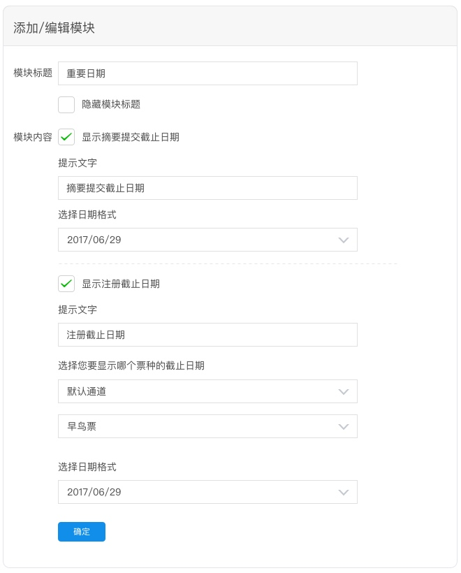
图13：重要日期模块样式
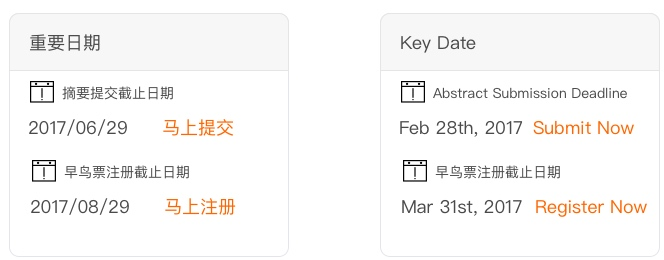
2.2.3.2 注册登录功能（联系人）
- 简要说明
报名前先注册/登录后报名的流程
2.2.3.3 修改个人信息（联系人）
- 简要说明
在个人中心中可修改联系人信息
业务规则
- 所有字段均可以修改，见图21
- 密码修改功能需要另开一个页面，见图22
图21：修改参会人信息
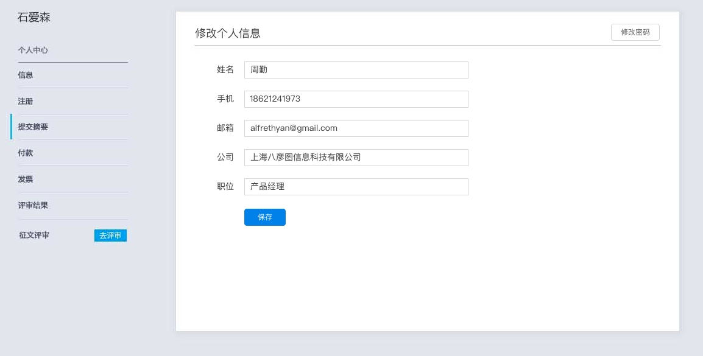
图22：修改密码
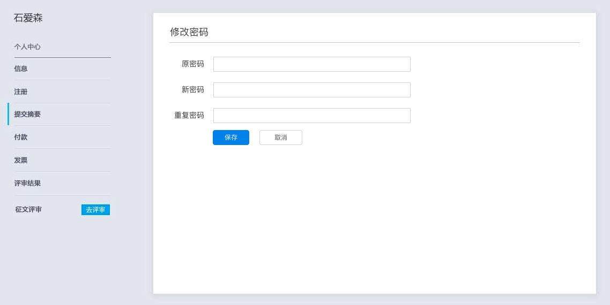
2.2.3.4 个人中心嵌入报名表单，包含门票字段
- 简要说明
个人中心可嵌入报名流程，使用当前的报名流程嵌入
业务规则
- 将现有的报名流程放入个人中心，在个人中心点击左侧的注册报名时，按照报名表单设计器中的流程处理
- 提交订单后返回到个人中心的“付款”页面，见图20
图20：付款页面
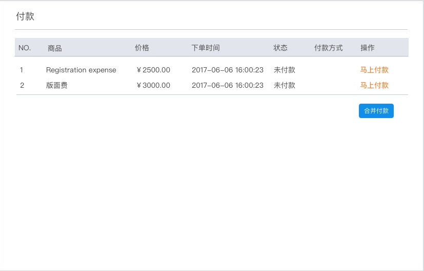
2.2.3.5 个人中心查看订单并付款
- 简要说明
提交报名信息生成订单或摘要通过审核后，会生成相关的订单，在左侧”付款“菜单中会显示当前的订单列表，如果订单处理未付款状态，可以单独付款或合并付款
业务规则
- 未付款的订单会在左侧显示提示，见图14
- 右侧订单列表可单独付款也可以合并付款，付款走标准pay站点流程
图14：未付款订单提示
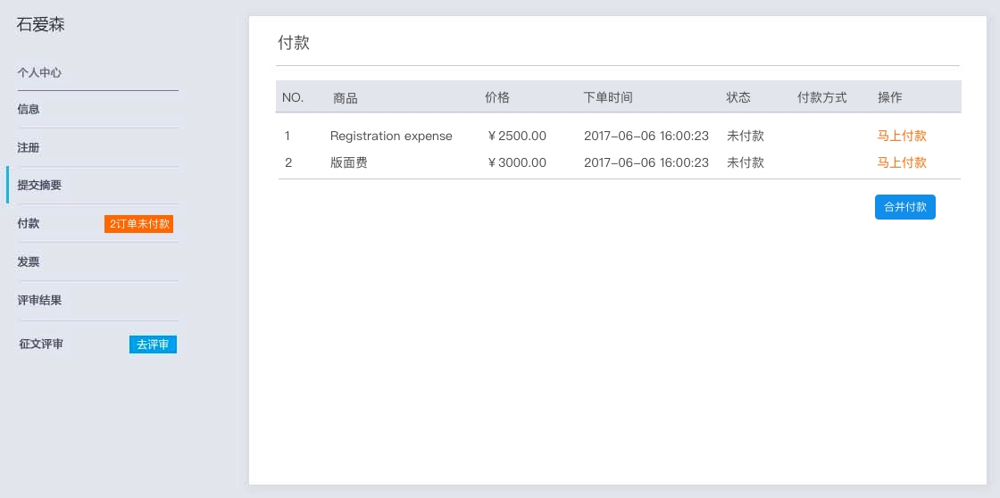
2.2.3.6 发票功能
- 简要说明
按订单提供发票信息填写功能（已完成）
2.2.3.7 提交征文（V1.0.8新增）
- 简要说明
后台提交征文功能
业务规则
- 第一作者、通讯作者在填写时，都需要添加演讲作者的开关（V1.0.8新增）
- 后台查看征文时，需要在演讲作者姓名后面添加（演讲作者），例：Bill Gates(演讲作者)（V1.0.8新增）
- 默认状态下，不再需要填写共同作者，自己增加共同作者和删除共同作者的逻辑不变（V1.0.8新增）
- 新增提交征文全文功能，根据后台设置是否开启，是否必填确定是否显示提交征文全文功能，以及是否必须提交征文全文功能（V1.0.8新增）
2.2.4 摘要后台管理
2.2.4.1 征文列表和编辑征文
- 简要说明
摘要列表是征文收集后的管理列表，用于管理摘要、分配摘要评审任务等工作
业务规则
- 征文共分为”待分配“、”待接受“、”待评审“、”已评审“、“已退回”、“已最终评审”等六个状态
- “已评审”、“已最终评审”中又分为“已通过”、“已拒绝”、“需修改”三种不同的子状态
- 摘要可以编辑、删除或查看任务
- 编辑摘要，点击作者后往下展开编辑作者表单，见图15、图16
- 文件形式编辑时，可以重新上传摘要文件，格式与后台设置的格式相同，需要使用网页端查看文档的插件
- 任何状态下的征文都可以删除，删除时需要二次提示，并且会同时删除相关的任务
- 简单搜索：可使用标题/序号/作者进行简单搜索
- 高级搜索：可使用“状态”、“征文主题/类型”、“提交时间”、“任务分配时间”、“任务接受时间”、“任务完成时间”、“最终评审时间”来进行高级搜索
- 下载全部：无论有没有选中论文摘要，下载全部功能均可以点击，点击后将所有征文打包（压缩：.zip格式）下载，下载格式为用户上传的格式。V1.0.4（新增）
- 下载所选：当选中了某一篇或几篇论文摘要时，出现“下载所选”按钮，注：选中后才显示，与删除按钮一样。点击后将选中的征文打包（压缩：.zip格式）下载，不论选中论文摘要的篇数，如只选中了一篇，也一样打包下载。 V1.0.4（新增）
- 如果下载数字为0的话，直接提示“您选择的征文记录没有文件可以下载” V1.0.7（修订）
- 新增下载任务：当点击“下载全部”、“下 载所选”时，如果当前没有进行中下载任务（进行中的下载任务包括未准备好的和已准备好且已经下载的），则直接弹出“查看下载”窗口，并马上开始下载准备。如果有进行中的下载任务，则需要先进行二次确认，点击继续后取消进行中的任务后，再开始新的下载任务。V1.0.5（新增）
- 将所有下载功能合并到一起，仅留下一个“下载”按钮，点击下载时，使用下拉菜单选择下载操作，下拉菜单包括：下载全部、下载所选 V1.0.8（新增）
- 下载时，将每篇征文都建立文件夹，征文的附件（摘要和全文）均放置在该文件夹内，如果没有全文附件，则只放摘要 V1.0.8（新增）
- 征文全文不提供在线查看功能，仅提供下载 V1.0.8（新增）
V1.0.4（新增）论文摘要下载功能
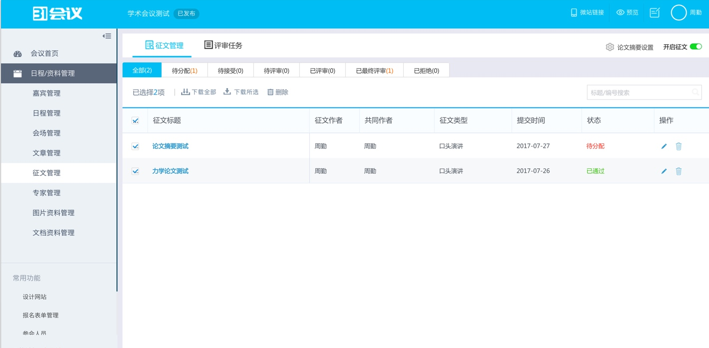
图15：编辑摘要内容，富文本形式
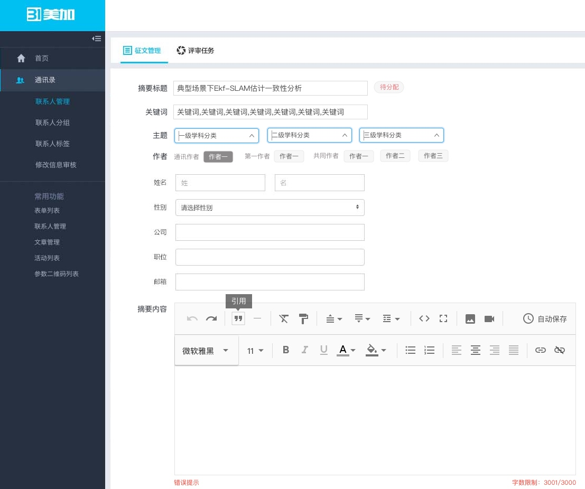
图16：编辑摘要内容，文件形式
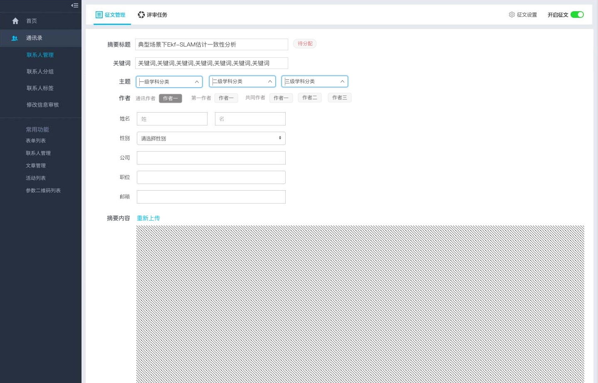
2.2.4.2 分配评审
- 简要说明
分配评审功能用于将摘要分配给某个评审专家进行评审
业务规则
- 目前仅支持将一篇摘要分配个一个专家
- 分配时可以使用学科分类进行筛选
- 选择的评审专家可以查看当前的任务状态，“待接收”、“待评审”、“已评审”数据
- 点击单条记录进行分配时，将按照当前摘要的学科分类自动匹配相同学科的专家
2.2.4.3 评审任务列表
- 简要说明
评审任务列表用于查看当前已分配给评审专家的任务信息
业务规则
- 任务属性集合，如当前任务下的属性值为空，则不显示该条数据。见图17
- 任务处于待接受时，有任务接受截止时间、任务编号、征文序号等属性，评审意见为空时，
- 任务处于待评审时，有评审截止时间、任务编号、征文序号
- 任务处于拒绝、通过、修改状态时，有“处理意见”、“处理时间”、”任务编号“、”征文序号“、”评审意见“；评审意见为空时，显示”无“
图17：任务属性集合
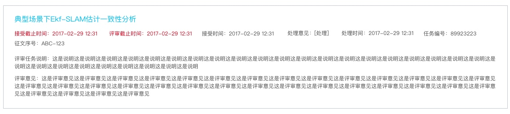
2.2.4.4 评审专家列表/增删查改操作
- 简要说明
评审专家列表用于管理评审专家，可以对评审专家进行增删查改等操作
业务规则
- 添加评审专家：学科分类使用后台”摘要提交设置“中设置好的学科分类
- 已经被分配任务的专家无法删除，且在名字前面会有任务图标，鼠标经过时会显示相关任务数据
- 高级筛选可以使用评审专家中所有字段进行筛选
- 删除时需要二次确认，删除后评审专家无法恢复
- 导入使用统一的导入界面，单会组开发
- 添加或导入时需要有密码字段
2.2.4.5 导出征文功能 V1.0.6新增
- 简要说明
导出征文功能用于导出收集的征文数据，包括征文相关数据，作者数据，不包括上传的文件；分为“导出全部”、“导出所选”两种功能
业务规则
- “导出全部”功能将会把列表中所有的数据一次性导出，无论有没有选中论文摘要，导出全部功能均可以点击
- “导出所选”功能将会导出当前选择的数据，当选中了某一篇或几篇论文摘要时，出现“下载所选”按钮，注：选中后才显示，与删除按钮一样。
- 导出数据包括：【征文编号】、【征文标题】、【关键词】、【主题】、【状态】、【提交时间】、【期望发表类型】、【作者】、【通讯作者姓名】、【通讯作者姓】、【通讯作者名】、【通讯作者性别】、【通讯作者职位】、【通讯作者邮箱】、【通讯作者手机】、【第一作者姓名】、【第一作者姓】、【第一作者名】、【第一作者性别】、【第一作者职位】、【第一作者邮箱】、【第一作者手机】
- 需要特殊处理的字段：【作者】：列出所有作者的名字，包括通讯作者和第一作者；【通讯作者姓名】【第一作者姓名】：使用【姓】和【名】拼成完整的姓名字段，中英文格式不一样，英文使用英文逗号+空格【, 】分割；【中英文】：按提交方式，如果通过英文版提交，则为en，如果通过中文版提交，则为cn
- 下载文件名：征文导出数据20170822115633.xls；命名格式："征文导出数据" + yyyyMMddhhmmss + ".xls"
2.2.5 评审专家个人中心
2.2.5.1 评审专家登录
- 简要说明
在登录页面添加评审专家登录入口，使用后台导入或添加的评审专家帐号（手机/邮箱）登录
业务规则
- 使用（手机/邮箱）作为帐号
- 密码MD5加密保存
2.2.5.2 待接受任务列表
- 简要说明
显示当前评审专家收到的未接受的任务
业务规则
- 简单搜索/筛选：可使用”摘要标题“、”摘要序号“、”任务编号“、”作者姓名“进行搜索
- 接受任务后，摘要转到”未评审摘要“中
- 拒绝任务后，摘要应同时出现在后台管理的”已拒绝“和”待分配“状态中
- 查看：可查看摘要主要内容
- 鼠标点击出操作按钮外的其余区域均可点击，见图17
- 鼠标经过和选中效果，见图18
图17: 点击区域
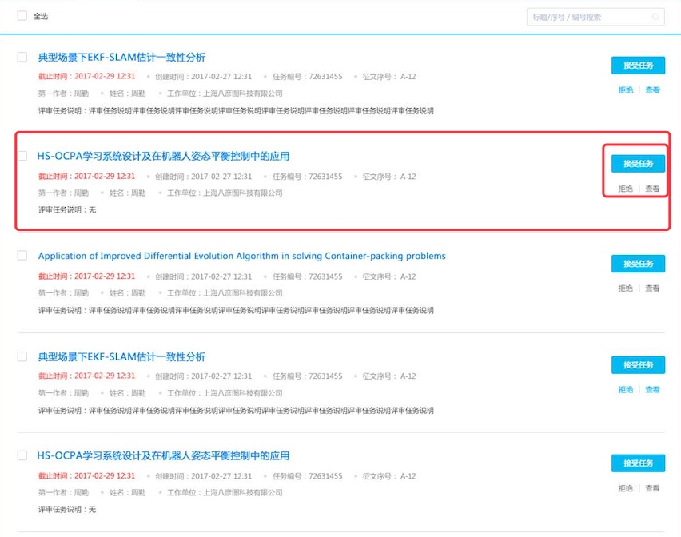
图18：鼠标经过和选中效果
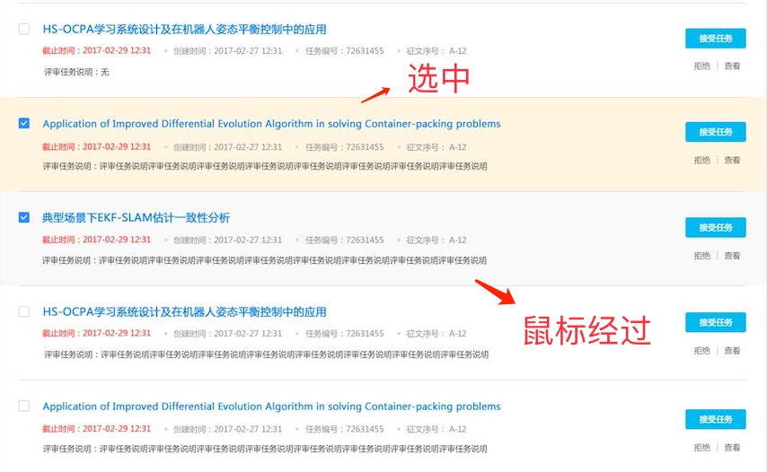
2.2.5.3 未评审摘要列表
- 简要说明
未评审摘要列表显示所有已接受的摘要任务，需要强调任务完成截止时间
业务规则
- 未评审摘要列表中的任务仍然可以拒绝，摘要应同时出现在后台管理的”已拒绝“和”待分配“状态中
- 只能单条评审，无法批量处理
- 评审时，需要填写评审处理方式和评审意见（根据后台设置）
- 评审后，需修改的摘要如果已被作者重新提交，也需要显示到未评审摘要列表中，见图19
图19：已修改的摘要
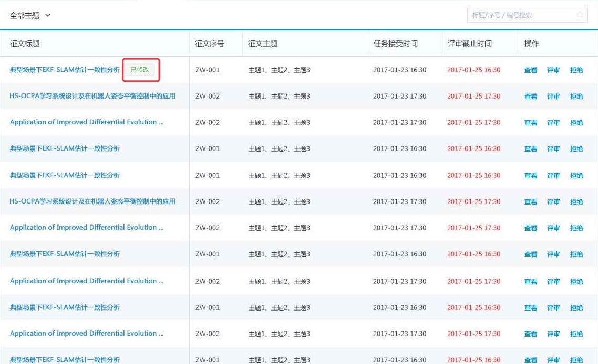
2.2.5.4 已评审摘要列表
- 简要说明
已评审摘要列表显示所有已经提交过评审的摘要任务，需要显示评审结果
业务规则
- 已评审的摘要无法再次修改
- 可以查看评审意见，查看评审意见时鼠标经过后显示评审意见内容
- 评审结果需要显示真实选择的评审结果，而不是其表示的结果内容
2.2.5.5 新增显示征文全文功能
- 简要说明
根据后台配置是否显示征文全文功能
业务规则
- 后台评审设置中可以设置评审专家是否能够查看征文全文
- 根据后台配置控制评审专家是否可以查看全文
2.2.6 征文提醒设置
- 简要说明
在征文状态变更时会使用短信或邮件向作者或评审专家进行提醒
- 业务规则
发送给主办方的通知：
1.任务接受提醒：
- 触发条件：在摘要评审任务被评审专家接受时发送给主办方管理员
- 内容：征文编号为：ABC-123的评审任务已被评审专家{专家姓名}接受，请登录后台查看；
- 默认状态：不勾选
- 可插入字段：作者姓名、作者手机、作者邮箱、专家姓名、专家手机、专家邮箱、摘要编号、任务ID、任务接受截止时间、征文学科分类、摘要标题、任务接受时间
2.任务拒绝提醒：
- 触发条件：在摘要评审任务被评审专家拒绝时发送给主办方管理员
- 内容：征文编号为：ABC-123的评审任务已被评审专家{专家姓名}拒绝，请登录后台查看
- 默认状态：不勾选
- 可插入字段：作者姓名、作者手机、作者邮箱、专家姓名、专家手机、专家邮箱、摘要编号、任务ID、任务接受截止时间、征文学科分类、摘要标题、任务拒绝时间、拒绝原因
3.评审邀请退回提醒：
- 触发条件：在摘要评审任务到截止时间后未被接受或拒绝，被退回时发送给主办方管理员
- 内容：征文编号为：ABC-123的评审任务已到截止时间，评审专家{专家姓名}未接受该任务，已被退回，请登录后台查看
- 默认状态：不勾选
- 可插入字段：作者姓名、作者手机、作者邮箱、专家姓名、专家手机、专家邮箱、摘要编号、任务ID、任务接受截止时间、征文学科分类、摘要标题、任务退回时间
4.评审任务退回提醒：
- 触发条件：在摘要评审任务到截止时间后未被评审，被退回时发送给主办方管理员
- 内容：征文编号为：ABC-123的评审任务已到截止时间，评审专家{专家姓名}未进行评审，已被退回，请登录后台查看
- 默认状态：不勾选
- 可插入字段：作者姓名、作者手机、作者邮箱、专家姓名、专家手机、专家邮箱、摘要编号、任务ID、任务接受截止时间、征文学科分类、摘要标题、任务退回时间
5.评审任务完成提醒：
- 触发条件：当评审任务被评审专家评审完成后，发送给主办方管理员
- 内容：编号为：ABC-123的摘要已评审完成，评审结果为“{评审结果}”，请登录后台查看
- 默认状态：不勾选
- 可插入字段：作者姓名、作者手机、作者邮箱、专家姓名、专家手机、专家邮箱、摘要编号、任务ID、任务接受截止时间、征文学科分类、摘要标题、任务完成时间
发送给作者的提醒：
1.提交成功提醒：
- 触发条件：在征文被作者提交成功时发送给作者
- 内容：您的摘要已提交成功，在{截止时间}之前，您可以使用手机号码登录后台修改征文内容
- 默认状态：勾选
- 可插入字段：作者姓名、作者手机、作者邮箱、学科分类、个人中心URL、征文标题、提交时间
2.摘要修改提醒：
- 触发条件：当摘要被评审专家或主办方标记为“需修改”时，发送给作者
- 内容：您在[会议名称]中提交的摘要评审结果为：“小幅修改”，请登录个人中心查看
- 默认状态：勾选
- 可插入字段：作者姓名、作者手机、作者邮箱、学科分类、个人中心URL、征文标题、提交时间、征文状态
3.评审结果提醒：
- 触发条件：a. 当评审任务被评审专家评审完，且不需要最终评审时；b.需要最终评审，并且主办方在后台进行了最终评审时；发送给作者的通知
- 内容：您提交的摘要已评审完成，评审结果为：{评审结果}，请登录个人中心查看评审结果
- 默认状态：勾选
- 可插入字段：作者姓名、作者手机、作者邮箱、学科分类、个人中心URL、征文标题、提交时间、评审结果
发送给评审专家的提醒：
1.分配评审提醒：
- 触发条件：在摘要被分配给评审专家时发送评审专家 ## > * 内容：您已收到一条新的评审邀请，征文编号：ABC-123，请登录查看 {loginUrl}
- 默认状态：勾选
- 可插入字段：作者姓名、作者手机、作者邮箱、学科分类、个人中心URL、征文标题、提交时间、任务接受截止时间、任务分配时间
2.摘要已修改提醒：
- 触发条件：当摘要被作者修改完成后，再次提交时，发送给评审专家
- 内容：编号为：ABC-123的摘要已修改完成，请登录后台查看
- 默认状态：勾选
- 可插入字段：作者姓名、作者手机、作者邮箱、学科分类、个人中心URL、征文标题、提交时间、任务评审截止时间、任务分配时间
3. 常见问题
3.1 问题一：勾选行中包括了有任务的专家（备注：已经被分配任务的专家无法删除）以及没有任务的专家，那么点击批量删除后，结果如何？
相关问题：专家管理这里 批量删除的时候 已经有任务的专家应该是不能删除的吧 这里是不是要把有任务的专家前面的复选框变成不可选的状态呢？
答：考虑到以后可能会添加其他批量操作的情况，需要允许选中已有任务的专家；当选中的专家中即有没有任务的专家，也有已有任务的专家时，禁用“批量删除”操作，鼠标经过时提示：您选择的专家中已被安排评审任务，无法批量删除
3.2 问题二：征文列表中的“已修改”是按钮还是标签？
答：“已修改”是一个标签，表示当前征文摘要已经被作者修改过了
3.3 问题三：征文列表中每个选项卡中对应的操作具体是如何对应的？比如点击已评审，是否只有最终评审和归档呢？
相关问题一：分配评审也会存在补充图中吗？则该图中的单篇评审图标与分配评审有何区别？
相关问题二：点击上方的每一个选项卡， 列表中的 操作列如何一一对应的？（比如此图中 操作列3个操作）
答：
- “全部”列表中，存在“归档”、“删除”两种操作
- "待分配"列表中，存在“归档”、“删除”、“分配评审”、“最终评审”四种操作
- “待接受”列表中，存在“归档”、“删除”、“取消评审任务”三种操作
- “待评审”列表中，存在“归档”、“删除”、“取消评审任务”三种操作
- “已评审”列表中，存在“归档”、“删除”、“最终评审”三种操作
- “已最终评审”列表明中，存在“归档”、“删除”、“修改评审”三种操作
注意：”取消评审“任务操作会将评审任务取消，专家在摘要列表里将无法看到该任务和征文摘要，需要二次确认，提示文案：取消评审将会使该任务所属评审专家无法再看到该任务
“修改评审”可以修改已经存在的评审结果，使用通用的评审模态窗口
相关问题一回答：分配评审只存在与“待分配”列表中，与单篇评审图标的分配评审没有区别，只是一个是批量，一个是单个
相关问题二回答：在“全部”“待分配”中，存在“编辑”、“删除”、“分配评审”三个按钮，在其他列表中，仅有“编辑”、“删除”按钮
3.4 征文序号必须生成
3.5 学科分类只支持单选
学科分类表：http://dean.pku.edu.cn/urtpku/yjxk.html
3.6 专家登录
3.7 作者个人中心菜单
- 个人信息（Personal information）
- 报名注册（Register）
- 提交摘要（Abstract）
- 酒店预订（Hotel reservation）
- 付款（Payment）
退出登录（Logout）
- 点击“报名注册”进入正常报名流程，提交完订单后，跳转回个人中心
- “酒店预订”是否显示需要判断后台酒店是否开启，点击“酒店预订”后，进入正常预订酒店流程，提交订单跳转回个人中心
- “付款”页面显示该联系人（帐号）下所有未付款的订单，并可以合并付款
3.8 摘要提交后，“已通过”、“需修改”状态下需要显示“评审结果”
“已通过”状态下，仅显示最终评审的结果，“需修改”状态下显示评审专家给的评审结果
显示方式：
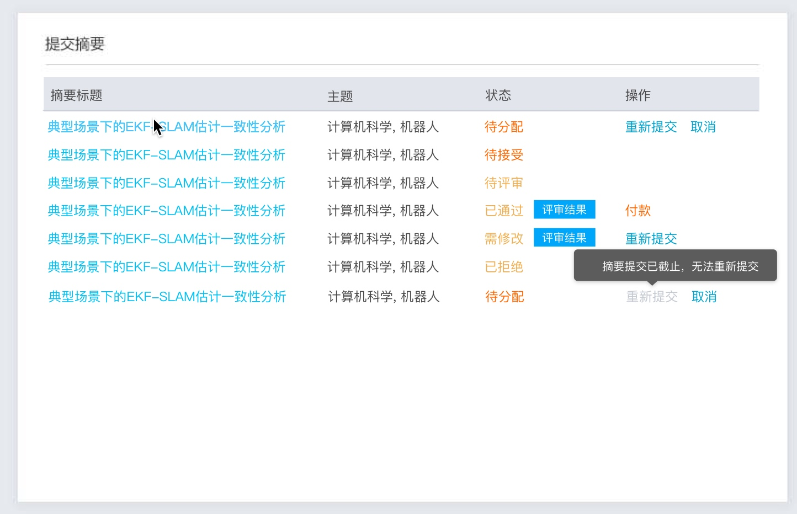
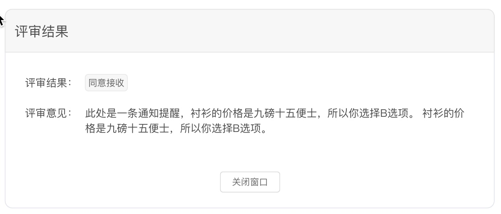